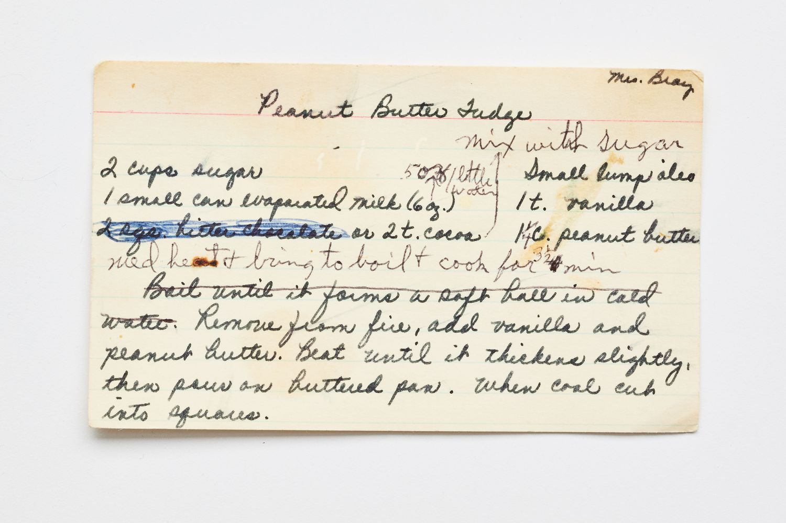

From Mrs. Bray

Fudge is a distinctly American confection. The most-repeated origin story traces it to Baltimore in the 1880s, where a batch of caramels was supposedly "fudged" — under-cooked — into a softer, more crystalline candy. The recipe spread quickly through women's colleges (Vassar, Smith, and Wellesley all claim to have refined it), where students made it in their dorm rooms over gas rings. Peanut butter as a fudge ingredient is a 20th-century addition: peanut butter only became a pantry staple in the U.S. after about 1910, and pairing it with chocolate took off after the Reese's cup arrived in the 1920s.
What dates this card is the cooking method — "boil until it forms a soft ball in cold water." That's the pre-thermometer test for the soft-ball stage (around 235°F), and the fact that the writer trusts the reader to know it suggests a kitchen from the 1940s or 50s. The word "oleo" (for margarine) and the casual use of evaporated milk in place of cream point the same direction: this is wartime or postwar economy cooking, where shortening and canned milk stretched the more expensive butter and cream.